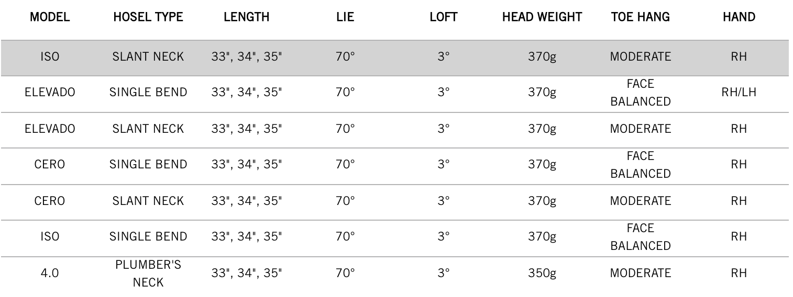

FRONTLINE ISO SLANT NECK PUTTER
A new way to design a putter: the Frontline Iso from Cleveland Golf. The Frontline Iso putter delivers Tungsten Forward Weighting and positions the center of gravity closer to face for more stability at impact for straighter, more consistent putts.
TECHNOLOGY

Forward Weights
With Tungsten Forward Weighting and the center of gravity positioned closer to the face, Frontline provides better stability through impact for straighter, more accurate putts.

Speed Optimized Face Technology
Cleveland’s proprietary Speed Optimized Face Technology pattern normalizes ball speed across the face, ensuring consistent distance performance on all your putts.

2135 Technology
Regardless of where your eyes are located at address, achieve perfect alignment on every putt with Cleveland’s 2135 Technology.
FRONTLINE ISO SLANT NECK PUTTER Specs
FRONTLINE ISO SLANT NECK PUTTER PRICE
€ / CHF / SEK / £